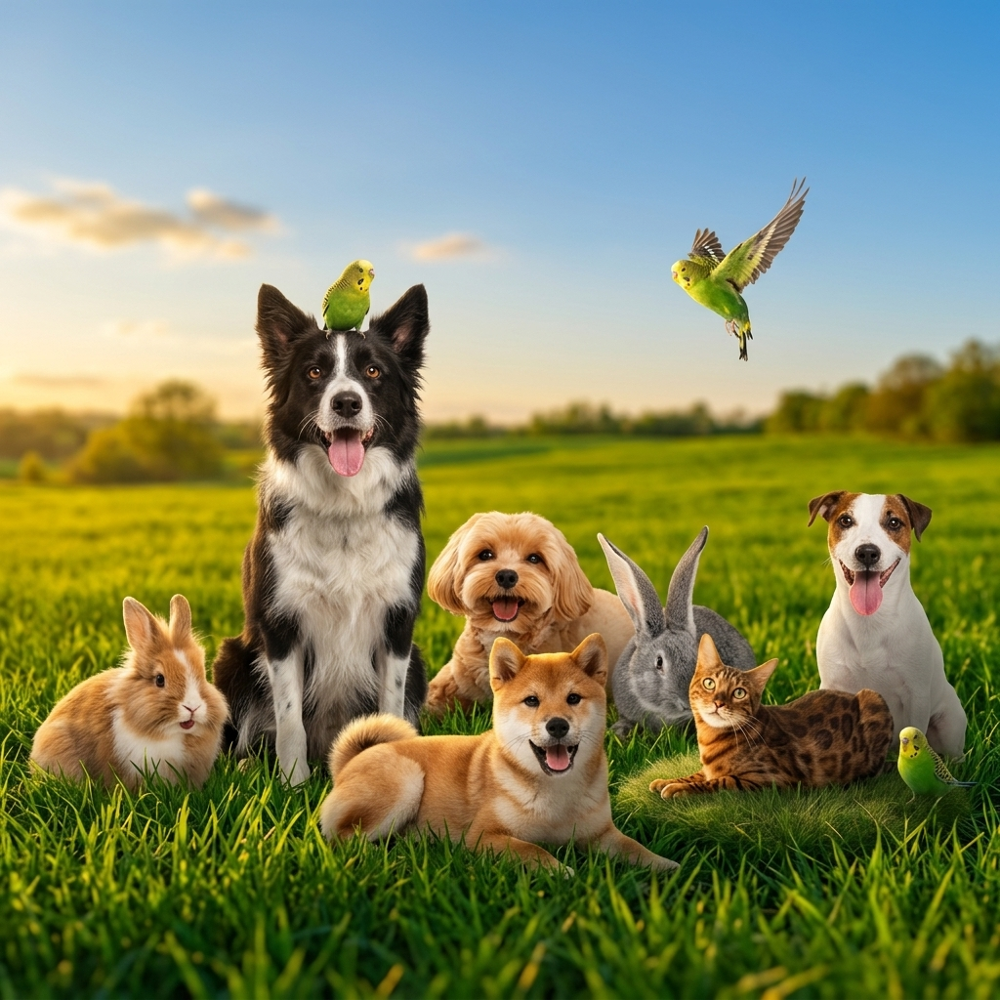
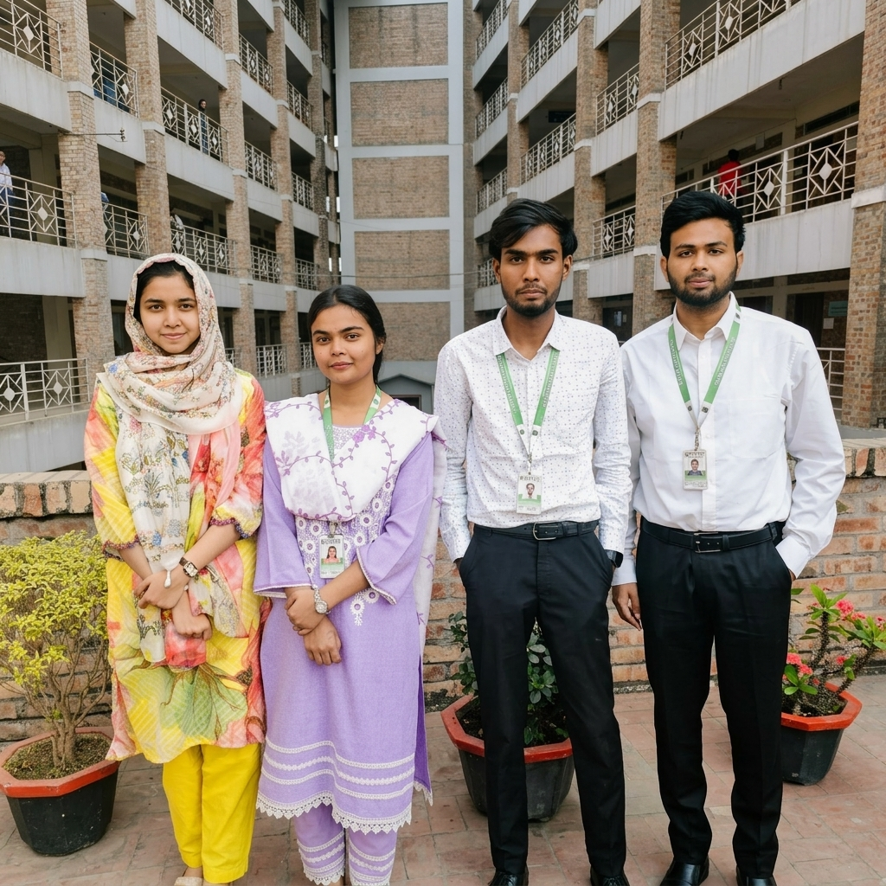

Care. Treat.
Rescue. Adopt.
The ultimate digital platform connecting rescuers, NGOs, and animal lovers across Bangladesh to save lives.

"A student-led initiative dedicated to building a safer future for every animal in Bangladesh."

Our Vision & Mission
ACSP was born from a vision to centralize and professionalize animal welfare efforts in Bangladesh. As a student-led initiative, we are building a digital ecosystem that empowers rescuers, supports NGOs, and connects animal lovers to create a unified force for compassion.
- target Centralizing rescue reporting for faster response times
- diversity_3 Building a verified network of local NGO partners
- volunteer_activism Fostering a community culture of animal advocacy
Common Questions
How can I report an injured animal?
expand_more
Is the adoption process free?
expand_more
Where does my donation go?
expand_more
How do I become a partner NGO?
expand_more
Can I volunteer as a veterinarian?
expand_more
Join our monthly newsletter
Get updates on success stories, upcoming rescue missions, and adoption events.